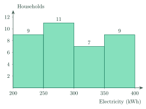
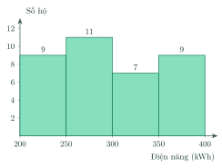
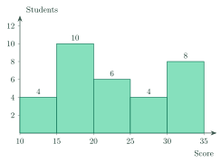
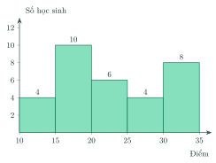
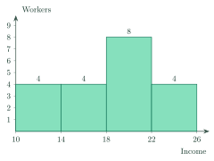
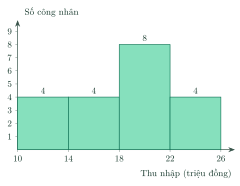

Range and Interquartile RangeKhoảng biến thiên và khoảng tứ phân vị
Grade 12 · Topic: StatisticsLớp 12 · Chủ đề: Các số đặc trưng đo mức độ phân tán
1Lesson IntroductionGiới thiệu bài học
Learning goalsMục tiêu bài học
By the end of this lesson you can:
Sau bài học này, em có thể:
find the range of grouped data;
tìm khoảng biến thiên của mẫu số liệu ghép nhóm;
find the quartiles \(Q_1,Q_2,Q_3\) with the formula;
tìm các tứ phân vị \(Q_1,Q_2,Q_3\) bằng công thức;
compute the interquartile range \(\Delta_Q=Q_3-Q_1\);
tính khoảng tứ phân vị \(\Delta_Q=Q_3-Q_1\);
compare the spread of two data sets in English.
so sánh độ phân tán của hai mẫu số liệu bằng tiếng Anh.
2Mathematical VocabularyTừ vựng Toán học
range – the largest value minus the smallest value; for grouped data, the right end of the last group minus the left end of the first group.
khoảng biến thiên – hiệu giữa giá trị lớn nhất và nhỏ nhất; với số liệu ghép nhóm là đầu mút phải của nhóm cuối trừ đầu mút trái của nhóm đầu.
quartile – one of three numbers \(Q_1,Q_2,Q_3\) that cut the data into four equal parts.
tứ phân vị – một trong ba số \(Q_1,Q_2,Q_3\) chia mẫu số liệu thành bốn phần bằng nhau.
interquartile range – the difference \(\Delta_Q=Q_3-Q_1\); it measures the spread of the middle half of the data.
khoảng tứ phân vị – hiệu \(\Delta_Q=Q_3-Q_1\); đo độ phân tán của nửa giữa mẫu số liệu.
dispersion (spread) – how far the data are spread out from each other.
độ phân tán – mức độ các giá trị trải rộng, xa nhau.
grouped data – data put into groups (classes) with a frequency for each group.
mẫu số liệu ghép nhóm – số liệu được chia thành các nhóm, mỗi nhóm có một tần số.
cumulative frequency – the number of data values up to the end of a group.
tần số tích lũy – số giá trị của mẫu từ đầu đến hết một nhóm.
compare – say which is larger or more spread out.
so sánh – nói cái nào lớn hơn hay phân tán hơn.
3Useful English PhrasesCụm từ tiếng Anh thường gặp
Find the range of the data.
Tìm khoảng biến thiên của mẫu số liệu.
Find the first quartile \(Q_1\).
Tìm tứ phân vị thứ nhất \(Q_1\).
Find the interquartile range.
Tìm khoảng tứ phân vị.
Which sample is more spread out?
Mẫu nào phân tán hơn?
The data are more concentrated.
Số liệu tập trung hơn.
4Prerequisite ReviewÔn tập kiến thức nền
From Grade 11: grouped data with groups \([u_i;u_{i+1})\) of width \(h\), frequencies \(n_i\), sample size \(n\), cumulative frequency, and the median formula \(M_e=u_m+\dfrac{\dfrac{n}{2}-C}{n_m}h\).
Từ lớp 11: số liệu ghép nhóm có nhóm \([u_i;u_{i+1})\) độ rộng \(h\), tần số \(n_i\), cỡ mẫu \(n\), tần số tích lũy và công thức trung vị \(M_e=u_m+\dfrac{\dfrac{n}{2}-C}{n_m}h\).
5TheoryLý thuyết
5.1 RangeKhoảng biến thiên
Range of grouped dataKhoảng biến thiên của mẫu ghép nhóm
Right end of the last group minus left end of the first group. It uses only two numbers, so one extreme value changes it a lot.
Đầu mút phải của nhóm cuối trừ đầu mút trái của nhóm đầu. Chỉ dùng hai số nên một giá trị cực đoan làm \(R\) thay đổi nhiều.
5.2 QuartilesTứ phân vị
Quartile formulaCông thức tứ phân vị
For \(Q_j\), take the first group whose cumulative frequency is at least \(\dfrac{jn}4\). Then \(n_m\) is its frequency and \(C\) is the cumulative frequency before it. \(Q_2\) is the median.
Với \(Q_j\), chọn nhóm đầu tiên có tần số tích lũy \(\ge\dfrac{jn}4\). Khi đó \(n_m\) là tần số nhóm đó, \(C\) là tần số tích lũy của các nhóm trước nó. \(Q_2\) chính là trung vị.
5.3 Interquartile rangeKhoảng tứ phân vị
DefinitionĐịnh nghĩa
\(\Delta_Q\) shows how wide the middle half of the data is. A smaller \(\Delta_Q\) means more concentrated data. It is not changed much by extreme values.
\(\Delta_Q\) cho biết nửa giữa của số liệu trải rộng bao nhiêu. \(\Delta_Q\) nhỏ hơn nghĩa là số liệu tập trung hơn. Giá trị cực đoan ít ảnh hưởng đến \(\Delta_Q\).
Watch out!Lưu ý
Compare spreads only for data with the same unit. The sample with the smaller \(\Delta_Q\) is more concentrated, even if its range is larger.
Chỉ so sánh độ phân tán khi cùng đơn vị. Mẫu có \(\Delta_Q\) nhỏ hơn thì tập trung hơn, kể cả khi khoảng biến thiên của nó lớn hơn.
6Worked ExamplesVí dụ có lời giải
ExampleVí dụ 1BasicCơ bản – The rangeKhoảng biến thiên
| Group | \([0;\,10)\) | \([10;\,20)\) | \([20;\,30)\) | \([30;\,40)\) | \([40;\,50)\) | Total |
|---|---|---|---|---|---|---|
| Frequency \(n_i\) | \(4\) | \(8\) | \(10\) | \(6\) | \(4\) | \(n=32\) |
| Nhóm | \([0;\,10)\) | \([10;\,20)\) | \([20;\,30)\) | \([30;\,40)\) | \([40;\,50)\) | Cộng |
|---|---|---|---|---|---|---|
| Tần số \(n_i\) | \(4\) | \(8\) | \(10\) | \(6\) | \(4\) | \(n=32\) |
Analysis: Use the ends of the first and last groups.
Phân tích: Dùng đầu mút của nhóm đầu và nhóm cuối.
\(R=u_{6}-u_1=50-0\).
\(R=u_{6}-u_1=50-0\).
\(R=50\ \text{cm}\).
\(R=50\ \text{cm}\).
ExampleVí dụ 2BasicCơ bản – Which group?Nhóm nào?
For the same data (\(n=32\)), which group contains \(Q_1\) and which contains \(Q_3\)?
Với cùng mẫu số liệu (\(n=32\)), nhóm nào chứa \(Q_1\), nhóm nào chứa \(Q_3\)?
Analysis: Compare \(\dfrac n4\) and \(\dfrac{3n}4\) with the cumulative frequencies \(4,12,22,28,32\).
Phân tích: So sánh \(\dfrac n4\) và \(\dfrac{3n}4\) với tần số tích lũy \(4,12,22,28,32\).
\(\dfrac n4=8\): the first cumulative frequency \(\ge8\) is 12, group \([10;20)\).
\(\dfrac n4=8\): tần số tích lũy đầu tiên \(\ge8\) là 12, nhóm \([10;20)\).
\(\dfrac{3n}4=24\): the first cumulative frequency \(\ge24\) is 28, group \([30;40)\).
\(\dfrac{3n}4=24\): tần số tích lũy đầu tiên \(\ge24\) là 28, nhóm \([30;40)\).
\(Q_1\in[10;20)\), \(Q_3\in[30;40)\).
\(Q_1\in[10;20)\), \(Q_3\in[30;40)\).
ExampleVí dụ 3IntermediateTrung bình – Compute \(Q_1\), \(Q_3\)Tính \(Q_1\), \(Q_3\)
Compute \(Q_1\), \(Q_3\) and \(\Delta_Q\) for the same data.
Tính \(Q_1\), \(Q_3\) và \(\Delta_Q\) cho mẫu số liệu trên.
Analysis: Use \(Q_j=u_m+\dfrac{\dfrac{jn}{4}-C}{n_m}h\).
Phân tích: Dùng \(Q_j=u_m+\dfrac{\dfrac{jn}{4}-C}{n_m}h\).
\(Q_1=10+\dfrac{8-4}{8}\cdot10=15\).
\(Q_1=10+\dfrac{8-4}{8}\cdot10=15\).
\(Q_3=30+\dfrac{24-22}{6}\cdot10=\dfrac{100}3\).
\(Q_3=30+\dfrac{24-22}{6}\cdot10=\dfrac{100}3\).
\(\Delta_Q=\dfrac{100}3-15=\dfrac{55}3\approx18.3\).
\(\Delta_Q=\dfrac{100}3-15=\dfrac{55}3\approx18{,}3\).
\(Q_1=15\), \(Q_3=\dfrac{100}3\approx33.3\), \(\Delta_Q\approx18.3\).
\(Q_1=15\), \(Q_3=\dfrac{100}3\approx33{,}3\), \(\Delta_Q\approx18{,}3\).
ExampleVí dụ 4IntermediateTrung bình – Compare two samplesSo sánh hai mẫu
Two classes run 100 m. Class A: groups of width 5 starting at 100, frequencies 4, 6, 4, 2. Class B has \(\Delta_Q=18.3\) s. Find \(\Delta_Q\) of class A and compare.
Hai lớp chạy 100 m. Lớp A: các nhóm độ rộng 5, tần số 4, 6, 4, 2, bắt đầu từ 100. Lớp B có \(\Delta_Q=18{,}3\) giây. Tính \(\Delta_Q\) của lớp A và so sánh.
Analysis: Find \(Q_1\) and \(Q_3\) of class A, then compare \(\Delta_Q\).
Phân tích: Tìm \(Q_1\), \(Q_3\) của lớp A rồi so sánh \(\Delta_Q\).
\(n=16\): \(\dfrac n4=4\) is in the first group, \(\dfrac{3n}4=12\) in the third group (cumulative 4, 10, 14, 16).
\(n=16\): \(\dfrac n4=4\) thuộc nhóm đầu, \(\dfrac{3n}4=12\) thuộc nhóm thứ ba (tích lũy 4, 10, 14, 16).
\(Q_1=100+\dfrac{4-0}{4}\cdot5=105\); \(Q_3=110+\dfrac{12-10}{4}\cdot5=112.5\).
\(Q_1=100+\dfrac{4-0}{4}\cdot5=105\); \(Q_3=110+\dfrac{12-10}{4}\cdot5=112{,}5\).
\(\Delta_Q=7.5\lt18.3\): class A is more concentrated than class B.
\(\Delta_Q=7{,}5\lt18{,}3\): lớp A tập trung hơn lớp B.
ExampleVí dụ 5AdvancedNâng cao – Range or \(\Delta_Q\)?Khoảng biến thiên hay \(\Delta_Q\)?
Sample X has \(R=40\), \(\Delta_Q=10\). Sample Y has \(R=30\), \(\Delta_Q=16\). Which sample is more spread out in the middle half? Which has the larger range?
Mẫu X có \(R=40\), \(\Delta_Q=10\). Mẫu Y có \(R=30\), \(\Delta_Q=16\). Mẫu nào phân tán hơn ở nửa giữa? Mẫu nào có khoảng biến thiên lớn hơn?
Analysis: \(R\) looks at the two extremes; \(\Delta_Q\) looks at the middle half.
Phân tích: \(R\) nhìn hai giá trị đầu mút; \(\Delta_Q\) nhìn nửa giữa số liệu.
Middle half: \(16\gt10\), so Y is more spread out.
Nửa giữa: \(16\gt10\) nên Y phân tán hơn.
Range: \(40\gt30\), so X has the larger range.
Khoảng biến thiên: \(40\gt30\) nên X có \(R\) lớn hơn.
Y is more spread out in the middle; X has the larger range. \(\Delta_Q\) is more reliable when there are extreme values.
Y phân tán hơn ở nửa giữa; X có \(R\) lớn hơn. \(\Delta_Q\) đáng tin hơn khi có giá trị cực đoan.
7PracticeBài tập luyện tập
A. Multiple ChoiceA. Trắc nghiệm nhiều lựa chọn
| Height (cm) | \([155;\,160)\) | \([160;\,165)\) | \([165;\,170)\) | \([170;\,175)\) | Total |
|---|---|---|---|---|---|
| Students | \(10\) | \(11\) | \(7\) | \(16\) | \(n=44\) |
| Chiều cao (cm) | \([155;\,160)\) | \([160;\,165)\) | \([165;\,170)\) | \([170;\,175)\) | Cộng |
|---|---|---|---|---|---|
| Số học sinh | \(10\) | \(11\) | \(7\) | \(16\) | \(n=44\) |
Answer: b. \(R=u_{k+1}-u_1=175-155=20\).
Đáp án b. \(R=u_{k+1}-u_1=175-155=20\).
| Time (min) | \([0;\,30)\) | \([30;\,60)\) | \([60;\,90)\) | \([90;\,120)\) | Total |
|---|---|---|---|---|---|
| Teenagers | \(7\) | \(4\) | \(5\) | \(12\) | \(n=28\) |
| Thời gian (phút) | \([0;\,30)\) | \([30;\,60)\) | \([60;\,90)\) | \([90;\,120)\) | Cộng |
|---|---|---|---|---|---|
| Số học sinh | \(7\) | \(4\) | \(5\) | \(12\) | \(n=28\) |
Answer: b. \(\dfrac n4=7\) lies in the group \([0;\,30)\); \(Q_1=0+\dfrac{7-0}{7}\cdot30=30\).
Đáp án b. \(\dfrac n4=7\) thuộc nhóm \([0;\,30)\); \(Q_1=0+\dfrac{7-0}{7}\cdot30=30\).
An electricity company recorded the monthly electricity use of households in a street. The histogram shows the grouped data. Find the third quartile \(Q_3\) of the monthly electricity use (in kWh).

Công ty điện lực ghi lại lượng điện tiêu thụ hằng tháng của các hộ gia đình một con phố. Biểu đồ tần số biểu diễn mẫu số liệu ghép nhóm. Tìm tứ phân vị thứ ba \(Q_3\) của lượng điện tiêu thụ hằng tháng (đơn vị kWh).

Answer: c. \(\dfrac{3n}{4}=27\) lies in the group \([300;\,350)\); \(Q_3=300+\dfrac{27-20}{7}\cdot50=350\).
Đáp án c. \(\dfrac{3n}{4}=27\) thuộc nhóm \([300;\,350)\); \(Q_3=300+\dfrac{27-20}{7}\cdot50=350\).
| Lifetime (h) | \([1000;\,1200)\) | \([1200;\,1400)\) | \([1400;\,1600)\) | \([1600;\,1800)\) | Total |
|---|---|---|---|---|---|
| Bulbs | \(10\) | \(5\) | \(4\) | \(5\) | \(n=24\) |
| Tuổi thọ (giờ) | \([1000;\,1200)\) | \([1200;\,1400)\) | \([1400;\,1600)\) | \([1600;\,1800)\) | Cộng |
|---|---|---|---|---|---|
| Số bóng đèn | \(10\) | \(5\) | \(4\) | \(5\) | \(n=24\) |
Answer: c. \(Q_1=1120\), \(Q_3=1550\), \(\Delta_Q=Q_3-Q_1=430\).
Đáp án c. \(Q_1=1120\), \(Q_3=1550\), \(\Delta_Q=Q_3-Q_1=430\).
| Age | \([25;\,30)\) | \([30;\,35)\) | \([35;\,40)\) | \([40;\,45)\) | \([45;\,50)\) | Total |
|---|---|---|---|---|---|---|
| Employees | \(5\) | \(5\) | \(4\) | \(7\) | \(3\) | \(n=24\) |
| Tuổi | \([25;\,30)\) | \([30;\,35)\) | \([35;\,40)\) | \([40;\,45)\) | \([45;\,50)\) | Cộng |
|---|---|---|---|---|---|---|
| Số nhân viên | \(5\) | \(5\) | \(4\) | \(7\) | \(3\) | \(n=24\) |
Answer: a. \(\dfrac n4=6\); cumulative frequencies 5, 10, 14, 21, 24: the first one \(\ge6\) belongs to \([30;\,35)\).
Đáp án a. \(\dfrac n4=6\); tần số tích lũy 5, 10, 14, 21, 24: số đầu tiên \(\ge6\) ứng với nhóm \([30;\,35)\).
Sample A
| Mass (g) | \([40;\,45)\) | \([45;\,50)\) | \([50;\,55)\) | \([55;\,60)\) | \([60;\,65)\) | Total |
|---|---|---|---|---|---|---|
| Eggs | \(12\) | \(14\) | \(6\) | \(10\) | \(6\) | \(n=48\) |
Sample B
| Mass (g) | \([40;\,45)\) | \([45;\,50)\) | \([50;\,55)\) | \([55;\,60)\) | \([60;\,65)\) | Total |
|---|---|---|---|---|---|---|
| Eggs | \(4\) | \(10\) | \(9\) | \(5\) | \(4\) | \(n=32\) |
Mẫu A
| Khối lượng (g) | \([40;\,45)\) | \([45;\,50)\) | \([50;\,55)\) | \([55;\,60)\) | \([60;\,65)\) | Cộng |
|---|---|---|---|---|---|---|
| Số quả trứng | \(12\) | \(14\) | \(6\) | \(10\) | \(6\) | \(n=48\) |
Mẫu B
| Khối lượng (g) | \([40;\,45)\) | \([45;\,50)\) | \([50;\,55)\) | \([55;\,60)\) | \([60;\,65)\) | Cộng |
|---|---|---|---|---|---|---|
| Số quả trứng | \(4\) | \(10\) | \(9\) | \(5\) | \(4\) | \(n=32\) |
Answer: b. \(\Delta_Q(A)=12\), \(\Delta_Q(B)=9\); the smaller \(\Delta_Q\) means more concentrated.
Đáp án b. \(\Delta_Q(A)=12\), \(\Delta_Q(B)=9\); \(\Delta_Q\) nhỏ hơn thì tập trung hơn.
B. True or FalseB. Đúng hoặc sai
| Income | \([8;\,10)\) | \([10;\,12)\) | \([12;\,14)\) | \([14;\,16)\) | Total |
|---|---|---|---|---|---|
| Workers | \(7\) | \(5\) | \(5\) | \(3\) | \(n=20\) |
| Thu nhập (triệu đồng) | \([8;\,10)\) | \([10;\,12)\) | \([12;\,14)\) | \([14;\,16)\) | Cộng |
|---|---|---|---|---|---|
| Số công nhân | \(7\) | \(5\) | \(5\) | \(3\) | \(n=20\) |
\(\dfrac{3n}4=15\); cumulative frequencies 7, 12, 17, 20, so \(Q_3\) is in \([12;\,14)\).
\(\dfrac{3n}4=15\); tần số tích lũy 7, 12, 17, 20 nên \(Q_3\) thuộc nhóm \([12;\,14)\).
For every grouped sample, \(\Delta_Q\le R\).
Với mọi mẫu số liệu ghép nhóm, \(\Delta_Q\le R\).
\(Q_1\) and \(Q_3\) lie between the two ends, so \(Q_3-Q_1\le R\).
\(Q_1\), \(Q_3\) nằm giữa hai đầu mút nên \(Q_3-Q_1\le R\).
| Waiting (min) | \([0;\,5)\) | \([5;\,10)\) | \([10;\,15)\) | \([15;\,20)\) | \([20;\,25)\) | Total |
|---|---|---|---|---|---|---|
| Customers | \(15\) | \(10\) | \(7\) | \(10\) | \(6\) | \(n=48\) |
| Thời gian chờ (phút) | \([0;\,5)\) | \([5;\,10)\) | \([10;\,15)\) | \([15;\,20)\) | \([20;\,25)\) | Cộng |
|---|---|---|---|---|---|---|
| Số khách hàng | \(15\) | \(10\) | \(7\) | \(10\) | \(6\) | \(n=48\) |
\(Q_3=17\): about 75% of the values are below \(Q_3\) and about 25% are at least \(Q_3\).
\(Q_3=17\): khoảng 75% giá trị nhỏ hơn \(Q_3\), khoảng 25% giá trị từ \(Q_3\) trở lên.
C. Short AnswerC. Trả lời ngắn
| Time (min) | \([10;\,20)\) | \([20;\,30)\) | \([30;\,40)\) | \([40;\,50)\) | \([50;\,60)\) | Total |
|---|---|---|---|---|---|---|
| Students | \(10\) | \(10\) | \(16\) | \(6\) | \(6\) | \(n=48\) |
| Thời gian (phút) | \([10;\,20)\) | \([20;\,30)\) | \([30;\,40)\) | \([40;\,50)\) | \([50;\,60)\) | Cộng |
|---|---|---|---|---|---|---|
| Số học sinh | \(10\) | \(10\) | \(16\) | \(6\) | \(6\) | \(n=48\) |
Enter a number (use a decimal point if needed).
Nhập một số (dùng dấu phẩy thập phân nếu cần).
\(Q_2\) is the median. \(\dfrac{2n}{4}=24\) lies in the group \([30;\,40)\); \(Q_2=30+\dfrac{24-20}{16}\cdot10=32.5\).
\(Q_2\) là trung vị. \(\dfrac{2n}{4}=24\) thuộc nhóm \([30;\,40)\); \(Q_2=30+\dfrac{24-20}{16}\cdot10=32{,}5\).
| Score | \([20;\,25)\) | \([25;\,30)\) | \([30;\,35)\) | \([35;\,40)\) | Total |
|---|---|---|---|---|---|
| Students | \(8\) | \(10\) | \(9\) | \(9\) | \(n=36\) |
| Điểm | \([20;\,25)\) | \([25;\,30)\) | \([30;\,35)\) | \([35;\,40)\) | Cộng |
|---|---|---|---|---|---|
| Số học sinh | \(8\) | \(10\) | \(9\) | \(9\) | \(n=36\) |
Enter a number.
Nhập một số.
Old \(Q_3=35\); adding \(5\) to every value moves \(Q_3\) by \(5\): \(40\).
\(Q_3\) cũ \(=35\); cộng \(5\) vào mọi giá trị thì \(Q_3\) tăng \(5\): \(40\).
| Electricity (kWh) | \([150;\,200)\) | \([200;\,250)\) | \([250;\,300)\) | \([300;\,350)\) | \([350;\,400)\) | Total |
|---|---|---|---|---|---|---|
| Households | \(6\) | \(3\) | \(3\) | \(9\) | \(x\) | \(n=21+x\) |
| Điện năng (kWh) | \([150;\,200)\) | \([200;\,250)\) | \([250;\,300)\) | \([300;\,350)\) | \([350;\,400)\) | Cộng |
|---|---|---|---|---|---|---|
| Số hộ | \(6\) | \(3\) | \(3\) | \(9\) | \(x\) | \(n=21+x\) |
Enter a number.
Nhập một số.
\(Q_1\) is in \([150;\,200)\): \(200=150+\dfrac{\dfrac n4-0}{6}\cdot50\) gives \(\dfrac n4=6\), \(n=24\), so \(x=3\).
\(Q_1\) thuộc nhóm \([150;\,200)\): \(200=150+\dfrac{\dfrac n4-0}{6}\cdot50\) cho \(\dfrac n4=6\), \(n=24\), nên \(x=3\).
A. Multiple ChoiceA. Trắc nghiệm nhiều lựa chọn
| Electricity (kWh) | \([150;\,200)\) | \([200;\,250)\) | \([250;\,300)\) | \([300;\,350)\) | Total |
|---|---|---|---|---|---|
| Households | \(10\) | \(18\) | \(6\) | \(6\) | \(n=40\) |
| Điện năng (kWh) | \([150;\,200)\) | \([200;\,250)\) | \([250;\,300)\) | \([300;\,350)\) | Cộng |
|---|---|---|---|---|---|
| Số hộ | \(10\) | \(18\) | \(6\) | \(6\) | \(n=40\) |
Answer: c. \(R=u_{k+1}-u_1=350-150=200\).
Đáp án c. \(R=u_{k+1}-u_1=350-150=200\).
| Time (min) | \([60;\,90)\) | \([90;\,120)\) | \([120;\,150)\) | \([150;\,180)\) | \([180;\,210)\) | Total |
|---|---|---|---|---|---|---|
| Teenagers | \(12\) | \(4\) | \(6\) | \(6\) | \(4\) | \(n=32\) |
| Thời gian (phút) | \([60;\,90)\) | \([90;\,120)\) | \([120;\,150)\) | \([150;\,180)\) | \([180;\,210)\) | Cộng |
|---|---|---|---|---|---|---|
| Số học sinh | \(12\) | \(4\) | \(6\) | \(6\) | \(4\) | \(n=32\) |
Answer: b. \(\dfrac n4=8\) lies in the group \([60;\,90)\); \(Q_1=60+\dfrac{8-0}{12}\cdot30=80\).
Đáp án b. \(\dfrac n4=8\) thuộc nhóm \([60;\,90)\); \(Q_1=60+\dfrac{8-0}{12}\cdot30=80\).
A teacher recorded the scores of a test marked out of 50 points. Based on the histogram, the third quartile \(Q_3\) of the score (in points) is…

Giáo viên ghi lại điểm một bài kiểm tra chấm theo thang 50 điểm. Dựa vào biểu đồ tần số, tứ phân vị thứ ba \(Q_3\) của điểm số (đơn vị điểm) là…

Answer: b. \(\dfrac{3n}{4}=24\) lies in the group \([25;\,30)\); \(Q_3=25+\dfrac{24-20}{4}\cdot5=30\).
Đáp án b. \(\dfrac{3n}{4}=24\) thuộc nhóm \([25;\,30)\); \(Q_3=25+\dfrac{24-20}{4}\cdot5=30\).
| Age | \([25;\,35)\) | \([35;\,45)\) | \([45;\,55)\) | \([55;\,65)\) | Total |
|---|---|---|---|---|---|
| Employees | \(8\) | \(10\) | \(6\) | \(8\) | \(n=32\) |
| Tuổi | \([25;\,35)\) | \([35;\,45)\) | \([45;\,55)\) | \([55;\,65)\) | Cộng |
|---|---|---|---|---|---|
| Số nhân viên | \(8\) | \(10\) | \(6\) | \(8\) | \(n=32\) |
Answer: b. \(Q_1=35\), \(Q_3=55\), \(\Delta_Q=Q_3-Q_1=20\).
Đáp án b. \(Q_1=35\), \(Q_3=55\), \(\Delta_Q=Q_3-Q_1=20\).
| Waiting (min) | \([5;\,10)\) | \([10;\,15)\) | \([15;\,20)\) | \([20;\,25)\) | Total |
|---|---|---|---|---|---|
| Customers | \(5\) | \(10\) | \(15\) | \(6\) | \(n=36\) |
| Thời gian chờ (phút) | \([5;\,10)\) | \([10;\,15)\) | \([15;\,20)\) | \([20;\,25)\) | Cộng |
|---|---|---|---|---|---|
| Số khách hàng | \(5\) | \(10\) | \(15\) | \(6\) | \(n=36\) |
Answer: a. \(\dfrac n4=9\); cumulative frequencies 5, 15, 30, 36: the first one \(\ge9\) belongs to \([10;\,15)\).
Đáp án a. \(\dfrac n4=9\); tần số tích lũy 5, 15, 30, 36: số đầu tiên \(\ge9\) ứng với nhóm \([10;\,15)\).
Sample A
| Income | \([10;\,14)\) | \([14;\,18)\) | \([18;\,22)\) | \([22;\,26)\) | \([26;\,30)\) | Total |
|---|---|---|---|---|---|---|
| Workers | \(8\) | \(11\) | \(5\) | \(4\) | \(4\) | \(n=32\) |
Sample B
| Income | \([10;\,14)\) | \([14;\,18)\) | \([18;\,22)\) | \([22;\,26)\) | \([26;\,30)\) | Total |
|---|---|---|---|---|---|---|
| Workers | \(8\) | \(7\) | \(6\) | \(4\) | \(7\) | \(n=32\) |
Mẫu A
| Thu nhập (triệu đồng) | \([10;\,14)\) | \([14;\,18)\) | \([18;\,22)\) | \([22;\,26)\) | \([26;\,30)\) | Cộng |
|---|---|---|---|---|---|---|
| Số công nhân | \(8\) | \(11\) | \(5\) | \(4\) | \(4\) | \(n=32\) |
Mẫu B
| Thu nhập (triệu đồng) | \([10;\,14)\) | \([14;\,18)\) | \([18;\,22)\) | \([22;\,26)\) | \([26;\,30)\) | Cộng |
|---|---|---|---|---|---|---|
| Số công nhân | \(8\) | \(7\) | \(6\) | \(4\) | \(7\) | \(n=32\) |
Answer: b. \(\Delta_Q(A)=8\), \(\Delta_Q(B)=11\); the smaller \(\Delta_Q\) means more concentrated.
Đáp án b. \(\Delta_Q(A)=8\), \(\Delta_Q(B)=11\); \(\Delta_Q\) nhỏ hơn thì tập trung hơn.
B. True or FalseB. Đúng hoặc sai
| Mass (g) | \([45;\,50)\) | \([50;\,55)\) | \([55;\,60)\) | \([60;\,65)\) | \([65;\,70)\) | Total |
|---|---|---|---|---|---|---|
| Eggs | \(7\) | \(4\) | \(4\) | \(4\) | \(5\) | \(n=24\) |
| Khối lượng (g) | \([45;\,50)\) | \([50;\,55)\) | \([55;\,60)\) | \([60;\,65)\) | \([65;\,70)\) | Cộng |
|---|---|---|---|---|---|---|
| Số quả trứng | \(7\) | \(4\) | \(4\) | \(4\) | \(5\) | \(n=24\) |
\(\dfrac{3n}4=18\); cumulative frequencies 7, 11, 15, 19, 24, so \(Q_3\) is in \([60;\,65)\).
\(\dfrac{3n}4=18\); tần số tích lũy 7, 11, 15, 19, 24 nên \(Q_3\) thuộc nhóm \([60;\,65)\).
Two samples with the same range always have the same interquartile range.
Hai mẫu có cùng khoảng biến thiên thì luôn có cùng khoảng tứ phân vị.
\(R\) only uses the two ends; \(\Delta_Q\) depends on how the middle half is spread.
\(R\) chỉ dùng hai đầu mút; \(\Delta_Q\) phụ thuộc cách phân bố của nửa giữa.
| Height (cm) | \([145;\,150)\) | \([150;\,155)\) | \([155;\,160)\) | \([160;\,165)\) | Total |
|---|---|---|---|---|---|
| Students | \(5\) | \(5\) | \(12\) | \(10\) | \(n=32\) |
| Chiều cao (cm) | \([145;\,150)\) | \([150;\,155)\) | \([155;\,160)\) | \([160;\,165)\) | Cộng |
|---|---|---|---|---|---|
| Số học sinh | \(5\) | \(5\) | \(12\) | \(10\) | \(n=32\) |
\(Q_3=161\): about 75% of the values are below \(Q_3\) and about 25% are at least \(Q_3\).
\(Q_3=161\): khoảng 75% giá trị nhỏ hơn \(Q_3\), khoảng 25% giá trị từ \(Q_3\) trở lên.
C. Short AnswerC. Trả lời ngắn
| Time (min) | \([0;\,10)\) | \([10;\,20)\) | \([20;\,30)\) | \([30;\,40)\) | Total |
|---|---|---|---|---|---|
| Students | \(5\) | \(6\) | \(5\) | \(8\) | \(n=24\) |
| Thời gian (phút) | \([0;\,10)\) | \([10;\,20)\) | \([20;\,30)\) | \([30;\,40)\) | Cộng |
|---|---|---|---|---|---|
| Số học sinh | \(5\) | \(6\) | \(5\) | \(8\) | \(n=24\) |
Enter a number (use a decimal point if needed).
Nhập một số (dùng dấu phẩy thập phân nếu cần).
\(Q_2\) is the median. \(\dfrac{2n}{4}=12\) lies in the group \([20;\,30)\); \(Q_2=20+\dfrac{12-11}{5}\cdot10=22\).
\(Q_2\) là trung vị. \(\dfrac{2n}{4}=12\) thuộc nhóm \([20;\,30)\); \(Q_2=20+\dfrac{12-11}{5}\cdot10=22\).
| Waiting (min) | \([0;\,5)\) | \([5;\,10)\) | \([10;\,15)\) | \([15;\,20)\) | \([20;\,25)\) | Total |
|---|---|---|---|---|---|---|
| Customers | \(4\) | \(8\) | \(11\) | \(5\) | \(4\) | \(n=32\) |
| Thời gian chờ (phút) | \([0;\,5)\) | \([5;\,10)\) | \([10;\,15)\) | \([15;\,20)\) | \([20;\,25)\) | Cộng |
|---|---|---|---|---|---|---|
| Số khách hàng | \(4\) | \(8\) | \(11\) | \(5\) | \(4\) | \(n=32\) |
Enter a number.
Nhập một số.
Old \(Q_3=16\); adding \(3\) to every value moves \(Q_3\) by \(3\): \(19\).
\(Q_3\) cũ \(=16\); cộng \(3\) vào mọi giá trị thì \(Q_3\) tăng \(3\): \(19\).
| Lifetime (h) | \([1400;\,1600)\) | \([1600;\,1800)\) | \([1800;\,2000)\) | \([2000;\,2200)\) | Total |
|---|---|---|---|---|---|
| Bulbs | \(8\) | \(6\) | \(3\) | \(x\) | \(n=17+x\) |
| Tuổi thọ (giờ) | \([1400;\,1600)\) | \([1600;\,1800)\) | \([1800;\,2000)\) | \([2000;\,2200)\) | Cộng |
|---|---|---|---|---|---|
| Số bóng đèn | \(8\) | \(6\) | \(3\) | \(x\) | \(n=17+x\) |
Enter a number.
Nhập một số.
\(Q_1\) is in \([1400;\,1600)\): \(1550=1400+\dfrac{\dfrac n4-0}{8}\cdot200\) gives \(\dfrac n4=6\), \(n=24\), so \(x=7\).
\(Q_1\) thuộc nhóm \([1400;\,1600)\): \(1550=1400+\dfrac{\dfrac n4-0}{8}\cdot200\) cho \(\dfrac n4=6\), \(n=24\), nên \(x=7\).
A. Multiple ChoiceA. Trắc nghiệm nhiều lựa chọn
| Time (min) | \([30;\,60)\) | \([60;\,90)\) | \([90;\,120)\) | \([120;\,150)\) | \([150;\,180)\) | Total |
|---|---|---|---|---|---|---|
| Teenagers | \(3\) | \(4\) | \(4\) | \(9\) | \(4\) | \(n=24\) |
| Thời gian (phút) | \([30;\,60)\) | \([60;\,90)\) | \([90;\,120)\) | \([120;\,150)\) | \([150;\,180)\) | Cộng |
|---|---|---|---|---|---|---|
| Số học sinh | \(3\) | \(4\) | \(4\) | \(9\) | \(4\) | \(n=24\) |
Answer: c. \(R=u_{k+1}-u_1=180-30=150\).
Đáp án c. \(R=u_{k+1}-u_1=180-30=150\).
| Waiting (min) | \([0;\,5)\) | \([5;\,10)\) | \([10;\,15)\) | \([15;\,20)\) | Total |
|---|---|---|---|---|---|
| Customers | \(5\) | \(7\) | \(5\) | \(3\) | \(n=20\) |
| Thời gian chờ (phút) | \([0;\,5)\) | \([5;\,10)\) | \([10;\,15)\) | \([15;\,20)\) | Cộng |
|---|---|---|---|---|---|
| Số khách hàng | \(5\) | \(7\) | \(5\) | \(3\) | \(n=20\) |
Answer: a. \(\dfrac n4=5\) lies in the group \([0;\,5)\); \(Q_1=0+\dfrac{5-0}{5}\cdot5=5\).
Đáp án a. \(\dfrac n4=5\) thuộc nhóm \([0;\,5)\); \(Q_1=0+\dfrac{5-0}{5}\cdot5=5\).
The monthly incomes (in million VND) of the workers in a workshop are grouped as follows. Use the histogram to estimate the upper quartile \(Q_3\) of the monthly income (in million VND).

Thu nhập hằng tháng (triệu đồng) của công nhân một xưởng được ghép nhóm như sau. Dùng biểu đồ tần số, ước lượng tứ phân vị thứ ba \(Q_3\) của thu nhập hằng tháng (đơn vị triệu đồng).

Answer: d. \(\dfrac{3n}{4}=15\) lies in the group \([18;\,22)\); \(Q_3=18+\dfrac{15-8}{8}\cdot4=21.5\).
Đáp án d. \(\dfrac{3n}{4}=15\) thuộc nhóm \([18;\,22)\); \(Q_3=18+\dfrac{15-8}{8}\cdot4=21{,}5\).
| Mass (g) | \([45;\,50)\) | \([50;\,55)\) | \([55;\,60)\) | \([60;\,65)\) | Total |
|---|---|---|---|---|---|
| Eggs | \(9\) | \(7\) | \(11\) | \(9\) | \(n=36\) |
| Khối lượng (g) | \([45;\,50)\) | \([50;\,55)\) | \([55;\,60)\) | \([60;\,65)\) | Cộng |
|---|---|---|---|---|---|
| Số quả trứng | \(9\) | \(7\) | \(11\) | \(9\) | \(n=36\) |
Answer: b. \(Q_1=50\), \(Q_3=60\), \(\Delta_Q=Q_3-Q_1=10\).
Đáp án b. \(Q_1=50\), \(Q_3=60\), \(\Delta_Q=Q_3-Q_1=10\).
| Time (min) | \([10;\,20)\) | \([20;\,30)\) | \([30;\,40)\) | \([40;\,50)\) | Total |
|---|---|---|---|---|---|
| Students | \(7\) | \(8\) | \(7\) | \(14\) | \(n=36\) |
| Thời gian (phút) | \([10;\,20)\) | \([20;\,30)\) | \([30;\,40)\) | \([40;\,50)\) | Cộng |
|---|---|---|---|---|---|
| Số học sinh | \(7\) | \(8\) | \(7\) | \(14\) | \(n=36\) |
Answer: a. \(\dfrac n4=9\); cumulative frequencies 7, 15, 22, 36: the first one \(\ge9\) belongs to \([20;\,30)\).
Đáp án a. \(\dfrac n4=9\); tần số tích lũy 7, 15, 22, 36: số đầu tiên \(\ge9\) ứng với nhóm \([20;\,30)\).
Sample A
| Electricity (kWh) | \([200;\,250)\) | \([250;\,300)\) | \([300;\,350)\) | \([350;\,400)\) | Total |
|---|---|---|---|---|---|
| Households | \(10\) | \(4\) | \(5\) | \(5\) | \(n=24\) |
Sample B
| Electricity (kWh) | \([200;\,250)\) | \([250;\,300)\) | \([300;\,350)\) | \([350;\,400)\) | Total |
|---|---|---|---|---|---|
| Households | \(9\) | \(8\) | \(10\) | \(9\) | \(n=36\) |
Mẫu A
| Điện năng (kWh) | \([200;\,250)\) | \([250;\,300)\) | \([300;\,350)\) | \([350;\,400)\) | Cộng |
|---|---|---|---|---|---|
| Số hộ | \(10\) | \(4\) | \(5\) | \(5\) | \(n=24\) |
Mẫu B
| Điện năng (kWh) | \([200;\,250)\) | \([250;\,300)\) | \([300;\,350)\) | \([350;\,400)\) | Cộng |
|---|---|---|---|---|---|
| Số hộ | \(9\) | \(8\) | \(10\) | \(9\) | \(n=36\) |
Answer: b. \(\Delta_Q(A)=110\), \(\Delta_Q(B)=100\); the smaller \(\Delta_Q\) means more concentrated.
Đáp án b. \(\Delta_Q(A)=110\), \(\Delta_Q(B)=100\); \(\Delta_Q\) nhỏ hơn thì tập trung hơn.
B. True or FalseB. Đúng hoặc sai
| Lifetime (h) | \([1000;\,1200)\) | \([1200;\,1400)\) | \([1400;\,1600)\) | \([1600;\,1800)\) | Total |
|---|---|---|---|---|---|
| Bulbs | \(7\) | \(14\) | \(5\) | \(6\) | \(n=32\) |
| Tuổi thọ (giờ) | \([1000;\,1200)\) | \([1200;\,1400)\) | \([1400;\,1600)\) | \([1600;\,1800)\) | Cộng |
|---|---|---|---|---|---|
| Số bóng đèn | \(7\) | \(14\) | \(5\) | \(6\) | \(n=32\) |
\(\dfrac{3n}4=24\); cumulative frequencies 7, 21, 26, 32, so \(Q_3\) is in \([1400;\,1600)\).
\(\dfrac{3n}4=24\); tần số tích lũy 7, 21, 26, 32 nên \(Q_3\) thuộc nhóm \([1400;\,1600)\).
The interquartile range is hardly affected by a few very large or very small values.
Khoảng tứ phân vị hầu như không bị ảnh hưởng bởi một vài giá trị rất lớn hoặc rất nhỏ.
\(\Delta_Q\) only describes the middle 50% of the data.
\(\Delta_Q\) chỉ mô tả 50% số liệu ở giữa.
| Score | \([20;\,25)\) | \([25;\,30)\) | \([30;\,35)\) | \([35;\,40)\) | \([40;\,45)\) | Total |
|---|---|---|---|---|---|---|
| Students | \(2\) | \(5\) | \(5\) | \(6\) | \(2\) | \(n=20\) |
| Điểm | \([20;\,25)\) | \([25;\,30)\) | \([30;\,35)\) | \([35;\,40)\) | \([40;\,45)\) | Cộng |
|---|---|---|---|---|---|---|
| Số học sinh | \(2\) | \(5\) | \(5\) | \(6\) | \(2\) | \(n=20\) |
\(Q_3=37.5\): about 75% of the values are below \(Q_3\) and about 25% are at least \(Q_3\).
\(Q_3=37{,}5\): khoảng 75% giá trị nhỏ hơn \(Q_3\), khoảng 25% giá trị từ \(Q_3\) trở lên.
C. Short AnswerC. Trả lời ngắn
| Height (cm) | \([155;\,160)\) | \([160;\,165)\) | \([165;\,170)\) | \([170;\,175)\) | Total |
|---|---|---|---|---|---|
| Students | \(5\) | \(13\) | \(12\) | \(6\) | \(n=36\) |
| Chiều cao (cm) | \([155;\,160)\) | \([160;\,165)\) | \([165;\,170)\) | \([170;\,175)\) | Cộng |
|---|---|---|---|---|---|
| Số học sinh | \(5\) | \(13\) | \(12\) | \(6\) | \(n=36\) |
Enter a number (use a decimal point if needed).
Nhập một số (dùng dấu phẩy thập phân nếu cần).
\(Q_2\) is the median. \(\dfrac{2n}{4}=18\) lies in the group \([160;\,165)\); \(Q_2=160+\dfrac{18-5}{13}\cdot5=165\).
\(Q_2\) là trung vị. \(\dfrac{2n}{4}=18\) thuộc nhóm \([160;\,165)\); \(Q_2=160+\dfrac{18-5}{13}\cdot5=165\).
| Age | \([30;\,35)\) | \([35;\,40)\) | \([40;\,45)\) | \([45;\,50)\) | \([50;\,55)\) | Total |
|---|---|---|---|---|---|---|
| Employees | \(4\) | \(3\) | \(4\) | \(7\) | \(6\) | \(n=24\) |
| Tuổi | \([30;\,35)\) | \([35;\,40)\) | \([40;\,45)\) | \([45;\,50)\) | \([50;\,55)\) | Cộng |
|---|---|---|---|---|---|---|
| Số nhân viên | \(4\) | \(3\) | \(4\) | \(7\) | \(6\) | \(n=24\) |
Enter a number.
Nhập một số.
Old \(Q_3=50\); adding \(1\) to every value moves \(Q_3\) by \(1\): \(51\).
\(Q_3\) cũ \(=50\); cộng \(1\) vào mọi giá trị thì \(Q_3\) tăng \(1\): \(51\).
| Electricity (kWh) | \([200;\,250)\) | \([250;\,300)\) | \([300;\,350)\) | \([350;\,400)\) | Total |
|---|---|---|---|---|---|
| Households | \(3\) | \(8\) | \(6\) | \(x\) | \(n=17+x\) |
| Điện năng (kWh) | \([200;\,250)\) | \([250;\,300)\) | \([300;\,350)\) | \([350;\,400)\) | Cộng |
|---|---|---|---|---|---|
| Số hộ | \(3\) | \(8\) | \(6\) | \(x\) | \(n=17+x\) |
Enter a number.
Nhập một số.
\(Q_1\) is in \([250;\,300)\): \(262.5=250+\dfrac{\dfrac n4-3}{8}\cdot50\) gives \(\dfrac n4=5\), \(n=20\), so \(x=3\).
\(Q_1\) thuộc nhóm \([250;\,300)\): \(262{,}5=250+\dfrac{\dfrac n4-3}{8}\cdot50\) cho \(\dfrac n4=5\), \(n=20\), nên \(x=3\).
D. Self-practice: Multiple ChoiceD. Tự luyện: trắc nghiệm
| Mass (g) | \([50;\,55)\) | \([55;\,60)\) | \([60;\,65)\) | \([65;\,70)\) | Total |
|---|---|---|---|---|---|
| Eggs | \(8\) | \(10\) | \(9\) | \(13\) | \(n=40\) |
| Khối lượng (g) | \([50;\,55)\) | \([55;\,60)\) | \([60;\,65)\) | \([65;\,70)\) | Cộng |
|---|---|---|---|---|---|
| Số quả trứng | \(8\) | \(10\) | \(9\) | \(13\) | \(n=40\) |
Answer: c. \(C=8\) (before the group), so \(Q_1=56\), not \(51\).
Đáp án c. \(C=8\) (tích lũy trước nhóm) nên \(Q_1=56\), không phải \(51\).
The test scores of two classes were compared. Sample X: \(R=25\), \(\Delta_Q=11\) (points). Sample Y: \(R=20\), \(\Delta_Q=14\) (points). Which statement is correct?
So sánh điểm kiểm tra của hai lớp. Mẫu X: \(R=25\), \(\Delta_Q=11\) (điểm). Mẫu Y: \(R=20\), \(\Delta_Q=14\) (điểm). Khẳng định nào đúng?
Answer: d. \(R\): \(25\gt20\); \(\Delta_Q\): \(11\lt14\).
Đáp án d. \(R\): \(25\gt20\); \(\Delta_Q\): \(11\lt14\).
The charging times of phones were grouped and the interquartile range is \(\Delta_Q=1.5\) hours. If all values are written in minutes, the interquartile range is…
Thời gian sạc pin của các điện thoại được ghép nhóm và có khoảng tứ phân vị \(\Delta_Q=1{,}5\) giờ. Nếu đổi mọi giá trị sang đơn vị phút thì khoảng tứ phân vị bằng…
Answer: d. Every value is multiplied by \(60\), so \(Q_1\), \(Q_3\) and \(\Delta_Q\) are multiplied by \(60\): \(90\).
Đáp án d. Mọi giá trị nhân với \(60\) nên \(Q_1\), \(Q_3\) và \(\Delta_Q\) cũng nhân với \(60\): \(90\).
| Height (cm) | \([145;\,155)\) | \([155;\,165)\) | \([165;\,175)\) | \([175;\,185)\) | \([185;\,195)\) | Total |
|---|---|---|---|---|---|---|
| Students | \(4\) | \(4\) | \(6\) | \(4\) | \(2\) | \(n=20\) |
| Chiều cao (cm) | \([145;\,155)\) | \([155;\,165)\) | \([165;\,175)\) | \([175;\,185)\) | \([185;\,195)\) | Cộng |
|---|---|---|---|---|---|---|
| Số học sinh | \(4\) | \(4\) | \(6\) | \(4\) | \(2\) | \(n=20\) |
Answer: a. Between \(Q_1\) and \(Q_3\) lie about 50% of the data: \(\dfrac{20}{2}=10\).
Đáp án a. Giữa \(Q_1\) và \(Q_3\) có khoảng 50% số liệu: \(\dfrac{20}{2}=10\).
| Income | \([8;\,12)\) | \([12;\,16)\) | \([16;\,20)\) | \([20;\,24)\) | Total |
|---|---|---|---|---|---|
| Workers | \(8\) | \(6\) | \(4\) | \(6\) | \(n=24\) |
| Thu nhập (triệu đồng) | \([8;\,12)\) | \([12;\,16)\) | \([16;\,20)\) | \([20;\,24)\) | Cộng |
|---|---|---|---|---|---|
| Số công nhân | \(8\) | \(6\) | \(4\) | \(6\) | \(n=24\) |
Answer: b. \(\Delta_Q\le R=24-8=16\), so \(24\) is impossible.
Đáp án b. \(\Delta_Q\le R=24-8=16\) nên \(24\) không thể xảy ra.
| Waiting (min) | \([10;\,15)\) | \([15;\,20)\) | \([20;\,25)\) | \([25;\,30)\) | \([30;\,35)\) |
|---|---|---|---|---|---|
| Cumulative frequency | \(6\) | \(11\) | \(22\) | \(27\) | \(36\) |
| Thời gian chờ (phút) | \([10;\,15)\) | \([15;\,20)\) | \([20;\,25)\) | \([25;\,30)\) | \([30;\,35)\) |
|---|---|---|---|---|---|
| Tần số tích lũy | \(6\) | \(11\) | \(22\) | \(27\) | \(36\) |
Answer: d. \(n=36\) (last cumulative frequency); frequency of \([25;\,30)\) is \(27-22=5\). \(\dfrac{3n}{4}=27\) lies in the group \([25;\,30)\); \(Q_3=25+\dfrac{27-22}{5}\cdot5=30\).
Đáp án d. \(n=36\) (tần số tích lũy cuối); tần số nhóm \([25;\,30)\) là \(27-22=5\). \(\dfrac{3n}{4}=27\) thuộc nhóm \([25;\,30)\); \(Q_3=25+\dfrac{27-22}{5}\cdot5=30\).
A sample is grouped into 4 groups of equal width; the first group starts at 40 and the range is \(R=16\). The second group is…
Mẫu số liệu được chia thành 4 nhóm có độ dài bằng nhau; nhóm đầu bắt đầu từ 40 và khoảng biến thiên \(R=16\). Nhóm thứ hai là…
Answer: d. \(h=\dfrac Rk=\dfrac{16}{4}=4\); group 2 is \([44;\,48)\).
Đáp án d. \(h=\dfrac Rk=\dfrac{16}{4}=4\); nhóm 2 là \([44;\,48)\).
| Time (min) | \([0;\,5)\) | \([5;\,10)\) | \([10;\,15)\) | \([15;\,20)\) | \([20;\,25)\) | Total |
|---|---|---|---|---|---|---|
| Students | \(11\) | \(5\) | \(8\) | \(8\) | \(8\) | \(n=40\) |
| Thời gian (phút) | \([0;\,5)\) | \([5;\,10)\) | \([10;\,15)\) | \([15;\,20)\) | \([20;\,25)\) | Cộng |
|---|---|---|---|---|---|---|
| Số học sinh | \(11\) | \(5\) | \(8\) | \(8\) | \(8\) | \(n=40\) |
Answer: b. \(R\) grows from \(25\) to at least \(45\); the quartiles move only a little (one value among \(41\)).
Đáp án b. \(R\) tăng từ \(25\) lên ít nhất \(45\); các tứ phân vị chỉ dịch chuyển rất ít (một giá trị trong \(41\) giá trị).
D. Self-practice: Multiple ChoiceD. Tự luyện: trắc nghiệm
| Income | \([8;\,12)\) | \([12;\,16)\) | \([16;\,20)\) | \([20;\,24)\) | \([24;\,28)\) | Total |
|---|---|---|---|---|---|---|
| Workers | \(2\) | \(6\) | \(5\) | \(3\) | \(4\) | \(n=20\) |
| Thu nhập (triệu đồng) | \([8;\,12)\) | \([12;\,16)\) | \([16;\,20)\) | \([20;\,24)\) | \([24;\,28)\) | Cộng |
|---|---|---|---|---|---|---|
| Số công nhân | \(2\) | \(6\) | \(5\) | \(3\) | \(4\) | \(n=20\) |
Answer: a. \(C=2\) (before the group), so \(Q_1=14\), not \(10\).
Đáp án a. \(C=2\) (tích lũy trước nhóm) nên \(Q_1=14\), không phải \(10\).
The waiting times of two shops were compared. Sample X: \(R=55\), \(\Delta_Q=8\) (minutes). Sample Y: \(R=35\), \(\Delta_Q=11\) (minutes). Which statement is correct?
So sánh thời gian chờ của hai cửa hàng. Mẫu X: \(R=55\), \(\Delta_Q=8\) (phút). Mẫu Y: \(R=35\), \(\Delta_Q=11\) (phút). Khẳng định nào đúng?
Answer: a. \(R\): \(55\gt35\); \(\Delta_Q\): \(8\lt11\).
Đáp án a. \(R\): \(55\gt35\); \(\Delta_Q\): \(8\lt11\).
The long jumps of students were grouped and the interquartile range is \(\Delta_Q=1.2\) m. If all values are written in cm, the interquartile range is…
Thành tích nhảy xa của học sinh được ghép nhóm và có khoảng tứ phân vị \(\Delta_Q=1{,}2\) m. Nếu đổi mọi giá trị sang đơn vị cm thì khoảng tứ phân vị bằng…
Answer: c. Every value is multiplied by \(100\), so \(Q_1\), \(Q_3\) and \(\Delta_Q\) are multiplied by \(100\): \(120\).
Đáp án c. Mọi giá trị nhân với \(100\) nên \(Q_1\), \(Q_3\) và \(\Delta_Q\) cũng nhân với \(100\): \(120\).
| Time (min) | \([30;\,60)\) | \([60;\,90)\) | \([90;\,120)\) | \([120;\,150)\) | Total |
|---|---|---|---|---|---|
| Teenagers | \(4\) | \(4\) | \(7\) | \(9\) | \(n=24\) |
| Thời gian (phút) | \([30;\,60)\) | \([60;\,90)\) | \([90;\,120)\) | \([120;\,150)\) | Cộng |
|---|---|---|---|---|---|
| Số học sinh | \(4\) | \(4\) | \(7\) | \(9\) | \(n=24\) |
Answer: b. Between \(Q_1\) and \(Q_3\) lie about 50% of the data: \(\dfrac{24}{2}=12\).
Đáp án b. Giữa \(Q_1\) và \(Q_3\) có khoảng 50% số liệu: \(\dfrac{24}{2}=12\).
| Age | \([20;\,30)\) | \([30;\,40)\) | \([40;\,50)\) | \([50;\,60)\) | \([60;\,70)\) | Total |
|---|---|---|---|---|---|---|
| Employees | \(8\) | \(5\) | \(6\) | \(7\) | \(10\) | \(n=36\) |
| Tuổi | \([20;\,30)\) | \([30;\,40)\) | \([40;\,50)\) | \([50;\,60)\) | \([60;\,70)\) | Cộng |
|---|---|---|---|---|---|---|
| Số nhân viên | \(8\) | \(5\) | \(6\) | \(7\) | \(10\) | \(n=36\) |
Answer: b. \(\Delta_Q\le R=70-20=50\), so \(60\) is impossible.
Đáp án b. \(\Delta_Q\le R=70-20=50\) nên \(60\) không thể xảy ra.
| Lifetime (h) | \([1400;\,1600)\) | \([1600;\,1800)\) | \([1800;\,2000)\) | \([2000;\,2200)\) |
|---|---|---|---|---|
| Cumulative frequency | \(12\) | \(20\) | \(36\) | \(48\) |
| Tuổi thọ (giờ) | \([1400;\,1600)\) | \([1600;\,1800)\) | \([1800;\,2000)\) | \([2000;\,2200)\) |
|---|---|---|---|---|
| Tần số tích lũy | \(12\) | \(20\) | \(36\) | \(48\) |
Answer: c. \(n=48\) (last cumulative frequency); frequency of \([1800;\,2000)\) is \(36-20=16\). \(\dfrac{3n}{4}=36\) lies in the group \([1800;\,2000)\); \(Q_3=1800+\dfrac{36-20}{16}\cdot200=2000\).
Đáp án c. \(n=48\) (tần số tích lũy cuối); tần số nhóm \([1800;\,2000)\) là \(36-20=16\). \(\dfrac{3n}{4}=36\) thuộc nhóm \([1800;\,2000)\); \(Q_3=1800+\dfrac{36-20}{16}\cdot200=2000\).
Grouped data have 5 groups of the same width, starting at 0, with range 50. Which interval is the second group?
Mẫu ghép nhóm có 5 nhóm cùng độ dài, bắt đầu từ 0, khoảng biến thiên bằng 50. Nhóm thứ hai là nửa khoảng nào?
Answer: b. \(h=\dfrac Rk=\dfrac{50}{5}=10\); group 2 is \([10;\,20)\).
Đáp án b. \(h=\dfrac Rk=\dfrac{50}{5}=10\); nhóm 2 là \([10;\,20)\).
| Mass (g) | \([40;\,45)\) | \([45;\,50)\) | \([50;\,55)\) | \([55;\,60)\) | Total |
|---|---|---|---|---|---|
| Eggs | \(12\) | \(7\) | \(7\) | \(14\) | \(n=40\) |
| Khối lượng (g) | \([40;\,45)\) | \([45;\,50)\) | \([50;\,55)\) | \([55;\,60)\) | Cộng |
|---|---|---|---|---|---|
| Số quả trứng | \(12\) | \(7\) | \(7\) | \(14\) | \(n=40\) |
Answer: a. \(R\) grows from \(20\) to at least \(40\); the quartiles move only a little (one value among \(41\)).
Đáp án a. \(R\) tăng từ \(20\) lên ít nhất \(40\); các tứ phân vị chỉ dịch chuyển rất ít (một giá trị trong \(41\) giá trị).
D. Self-practice: Multiple ChoiceD. Tự luyện: trắc nghiệm
| Waiting (min) | \([0;\,5)\) | \([5;\,10)\) | \([10;\,15)\) | \([15;\,20)\) | \([20;\,25)\) | Total |
|---|---|---|---|---|---|---|
| Customers | \(3\) | \(3\) | \(9\) | \(5\) | \(4\) | \(n=24\) |
| Thời gian chờ (phút) | \([0;\,5)\) | \([5;\,10)\) | \([10;\,15)\) | \([15;\,20)\) | \([20;\,25)\) | Cộng |
|---|---|---|---|---|---|---|
| Số khách hàng | \(3\) | \(3\) | \(9\) | \(5\) | \(4\) | \(n=24\) |
Answer: c. \(C=3\) (before the group), so \(Q_1=10\), not \(5\).
Đáp án c. \(C=3\) (tích lũy trước nhóm) nên \(Q_1=10\), không phải \(5\).
The egg masses of two farms were compared. Sample X: \(R=60\), \(\Delta_Q=13\) (g). Sample Y: \(R=45\), \(\Delta_Q=16\) (g). Which statement is correct?
So sánh khối lượng trứng của hai trang trại. Mẫu X: \(R=60\), \(\Delta_Q=13\) (g). Mẫu Y: \(R=45\), \(\Delta_Q=16\) (g). Khẳng định nào đúng?
Answer: b. \(R\): \(60\gt45\); \(\Delta_Q\): \(13\lt16\).
Đáp án b. \(R\): \(60\gt45\); \(\Delta_Q\): \(13\lt16\).
The masses of watermelons were grouped and the interquartile range is \(\Delta_Q=0.8\) kg. If all values are written in g, the interquartile range is…
Khối lượng các quả dưa hấu được ghép nhóm và có khoảng tứ phân vị \(\Delta_Q=0{,}8\) kg. Nếu đổi mọi giá trị sang đơn vị g thì khoảng tứ phân vị bằng…
Answer: d. Every value is multiplied by \(1000\), so \(Q_1\), \(Q_3\) and \(\Delta_Q\) are multiplied by \(1000\): \(800\).
Đáp án d. Mọi giá trị nhân với \(1000\) nên \(Q_1\), \(Q_3\) và \(\Delta_Q\) cũng nhân với \(1000\): \(800\).
| Score | \([20;\,25)\) | \([25;\,30)\) | \([30;\,35)\) | \([35;\,40)\) | Total |
|---|---|---|---|---|---|
| Students | \(4\) | \(4\) | \(6\) | \(10\) | \(n=24\) |
| Điểm | \([20;\,25)\) | \([25;\,30)\) | \([30;\,35)\) | \([35;\,40)\) | Cộng |
|---|---|---|---|---|---|
| Số học sinh | \(4\) | \(4\) | \(6\) | \(10\) | \(n=24\) |
Answer: d. Between \(Q_1\) and \(Q_3\) lie about 50% of the data: \(\dfrac{24}{2}=12\).
Đáp án d. Giữa \(Q_1\) và \(Q_3\) có khoảng 50% số liệu: \(\dfrac{24}{2}=12\).
| Height (cm) | \([150;\,160)\) | \([160;\,170)\) | \([170;\,180)\) | \([180;\,190)\) | Total |
|---|---|---|---|---|---|
| Students | \(3\) | \(8\) | \(5\) | \(4\) | \(n=20\) |
| Chiều cao (cm) | \([150;\,160)\) | \([160;\,170)\) | \([170;\,180)\) | \([180;\,190)\) | Cộng |
|---|---|---|---|---|---|
| Số học sinh | \(3\) | \(8\) | \(5\) | \(4\) | \(n=20\) |
Answer: d. \(\Delta_Q\le R=190-150=40\), so \(50\) is impossible.
Đáp án d. \(\Delta_Q\le R=190-150=40\) nên \(50\) không thể xảy ra.
| Income | \([8;\,12)\) | \([12;\,16)\) | \([16;\,20)\) | \([20;\,24)\) |
|---|---|---|---|---|
| Cumulative frequency | \(5\) | \(8\) | \(15\) | \(20\) |
| Thu nhập (triệu đồng) | \([8;\,12)\) | \([12;\,16)\) | \([16;\,20)\) | \([20;\,24)\) |
|---|---|---|---|---|
| Tần số tích lũy | \(5\) | \(8\) | \(15\) | \(20\) |
Answer: c. \(n=20\) (last cumulative frequency); frequency of \([16;\,20)\) is \(15-8=7\). \(\dfrac{3n}{4}=15\) lies in the group \([16;\,20)\); \(Q_3=16+\dfrac{15-8}{7}\cdot4=20\).
Đáp án c. \(n=20\) (tần số tích lũy cuối); tần số nhóm \([16;\,20)\) là \(15-8=7\). \(\dfrac{3n}{4}=15\) thuộc nhóm \([16;\,20)\); \(Q_3=16+\dfrac{15-8}{7}\cdot4=20\).
The range of a sample with 4 equal groups starting from 100 is 20. Find the third group.
Khoảng biến thiên của mẫu có 4 nhóm đều nhau bắt đầu từ 100 là 20. Tìm nhóm thứ ba.
Answer: b. \(h=\dfrac Rk=\dfrac{20}{4}=5\); group 3 is \([110;\,115)\).
Đáp án b. \(h=\dfrac Rk=\dfrac{20}{4}=5\); nhóm 3 là \([110;\,115)\).
| Age | \([20;\,30)\) | \([30;\,40)\) | \([40;\,50)\) | \([50;\,60)\) | Total |
|---|---|---|---|---|---|
| Employees | \(8\) | \(10\) | \(7\) | \(15\) | \(n=40\) |
| Tuổi | \([20;\,30)\) | \([30;\,40)\) | \([40;\,50)\) | \([50;\,60)\) | Cộng |
|---|---|---|---|---|---|
| Số nhân viên | \(8\) | \(10\) | \(7\) | \(15\) | \(n=40\) |
Answer: c. \(R\) grows from \(40\) to at least \(80\); the quartiles move only a little (one value among \(41\)).
Đáp án c. \(R\) tăng từ \(40\) lên ít nhất \(80\); các tứ phân vị chỉ dịch chuyển rất ít (một giá trị trong \(41\) giá trị).
8Common MistakesLỗi thường gặp
Using the group ends wrongly for \(R\). \(R\) is the last right end minus the first left end.
Dùng sai đầu mút khi tính \(R\). \(R\) là đầu mút phải nhóm cuối trừ đầu mút trái nhóm đầu.
Wrong group for \(Q_j\). Compare \(\dfrac{jn}4\) with the cumulative frequency, not with the frequency \(n_i\).
Chọn sai nhóm cho \(Q_j\). So \(\dfrac{jn}4\) với tần số tích lũy, không so với tần số \(n_i\).
Forgetting \(C\). \(C\) is the cumulative frequency of the groups before the group of \(Q_j\).
Quên \(C\). \(C\) là tần số tích lũy của các nhóm đứng trước nhóm chứa \(Q_j\).
Comparing in the wrong direction. A smaller \(\Delta_Q\) means more concentrated data.
Kết luận ngược. \(\Delta_Q\) nhỏ hơn thì số liệu tập trung hơn.
9Lesson SummaryTổng kết
\(R=u_{k+1}-u_1\).
\(R=u_{k+1}-u_1\).
\(Q_j=u_m+\dfrac{\dfrac{jn}{4}-C}{n_m}h\); \(Q_2\) is the median.
\(Q_j=u_m+\dfrac{\dfrac{jn}{4}-C}{n_m}h\); \(Q_2\) là trung vị.
\(\Delta_Q=Q_3-Q_1\): smaller means more concentrated.
\(\Delta_Q=Q_3-Q_1\): càng nhỏ thì càng tập trung.
Key English words: range, quartile, interquartile range, spread.
Từ cần nhớ (chạm vào để xem tiếng Anh): tập giá trị; tứ phân vị; khoảng tứ phân vị; độ phân tán.